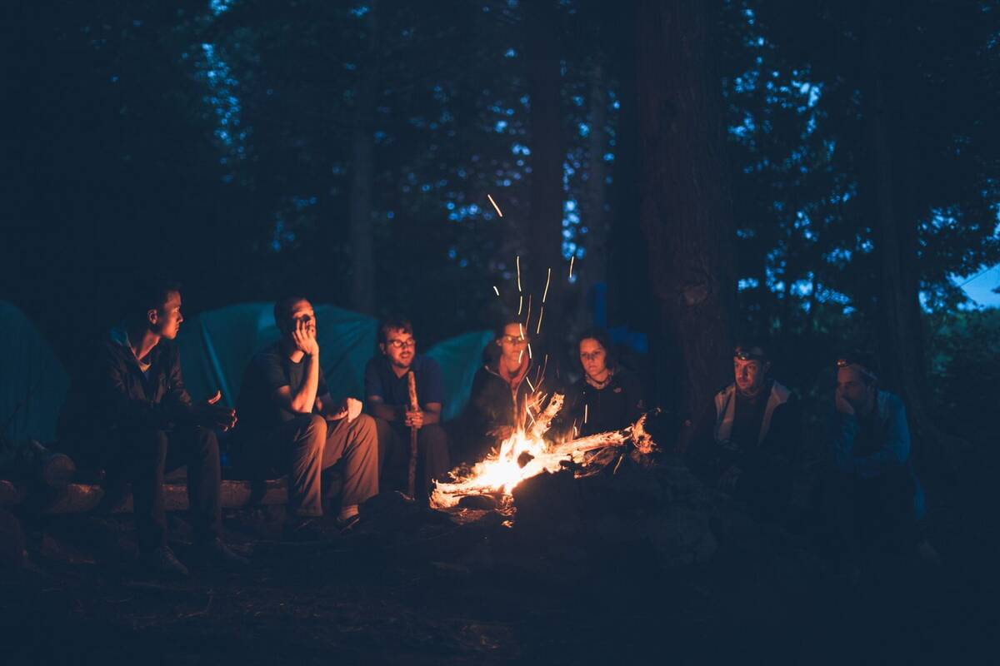
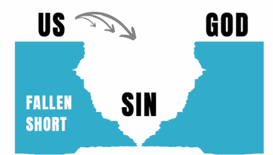
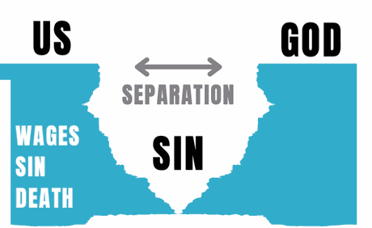
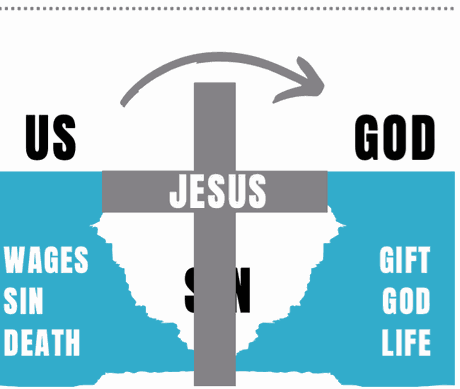

Small Group
Leaders
Group Leader Handbook · Southeast Students
2026–2027
© 2026 Southeast Students. All Rights Reserved.
No portion of this book may be reproduced in any form
without permission from the publisher, except as permitted by U.S. copyright law.
For permissions contact: Justin Davis at jdavis@secc.org
Contents
Let’s get to work
We’re so glad you’re here. Stepping into student ministry matters now more than ever. This is not about showing up once a week—you’re joining a movement of what God is doing to change lives for eternity.
Every game, every question, every text, every time you show up—it matters. Students need consistent voices who love them, listen, speak truth, and point them to Jesus. You may become one of the most spiritually influential people in their lives.
You’re not just a volunteer; you’re a shepherd—and you’re not doing it alone. You’re part of a team that will equip, support, and pray with you.
Will you lead with urgency, love, and courage this year? We believe God will use you in powerful ways.
YOUR STUDENT MINISTRY TEAM
The
Mission
Why We Exist
and to one another.
That means every effort, every prayer at Southeast works to fulfill it—Student Ministry included. Our mission is biblically rooted in both:
As a member of the Student Ministry team—no matter your role, from leading a group to welcoming people at the door—this is what you’re signing up to do.
Four Questions
Connecting students to Jesus and one another starts with four questions for every leader:
Your
Group
The Basics
Three Wins
Leading
Well
5 Keys
Getting Unstuck
Shepherding
Students
WHAT STUDENTS NEED
Every student has a need. Four chairs helps us pinpoint that need. As a leader, consider the following questions and see if God might reveal how you could meet the needs of the students around you.

Christ-followers in their lives who are willing to enter into their world relationally.
Who has God placed right around you? Are you entering into their world? Would people identify you as a “friend of sinners,” as Jesus was? Are you willing to leave the comfort of your home or church to enter into the world of those without Christ?

Christ-followers giving them personalized attention to the basics of the Christian life.
Do they know God’s story? Can they articulate their own story and how it fits into God’s story? Do they know how to confess sin, claim God’s forgiveness and walk in the power of the Holy Spirit? Are they learning to feed themselves?
WHAT STUDENTS NEED

Christ-followers calling them to action and to experience God using them.
Are they faithful, available, teachable, enthusiastic about the things of God, and responsive to leadership? Are they ministering in the Spirit? Are they living out their spiritual gifts? Are they willingly bearing their cross daily?

To be a Christ-follower who is making disciple-making disciples.
Have they successfully discipled someone into a disciple-maker? Are they secure in their walk with the Lord? Have they committed all of their life to fulfilling Jesus’ Great Commission?
I Want to Follow Christ
Five things a new believer needs to grow before becoming a worker—ask how Jesus shaped each in His disciples.
Decision
Guide
Purpose: to help a student reflect on their decision for Christ and the commitment of baptism.
- Tell me about your journey with Jesus so far.
- Why do you want to get baptized?
- Share with me your understanding of the gospel.
- Do you have any questions or things you’re unsure about?
“We were therefore buried with him through baptism into death in order that, just as Christ was raised from the dead through the glory of the Father, we too may live a new life.”
- Ask the student to read Romans 6:1–7 aloud.
- Baptism is a symbol:
- Baptism doesn’t save us. It is our response to what Jesus already did.
- Read 2 Corinthians 5:17 to 6:2.
- Today is the day of salvation! Will you go now and be Christ’s ambassador? He wants to use you to reach others! Who will you tell?
Genesis 1 describes the start of everything, including the start of humanity. God made us and began a relationship with us.
Genesis 3 describes how our relationship with God was broken by humanity’s disobedience.
We call this disobedience “sin.” God can have nothing to do with sin. Read Romans 3:23.


Romans 6:23 and Isaiah 59:2 describe the problem sin creates and its consequences. Sin separates us from God and causes death. There is nothing we can do to return to God on our own.
Romans 5:8, Romans 10:9–10 and Acts 2:38 tell us about the solution. His name is Jesus.
Jesus died for everyone’s sin, conquered death, and made a way for us to be with God again. When we trust in Jesus and choose to be baptized, we are saved!

Further
Resources
Conversations Guide
SE Students wants every leader to promote safety and awareness in tough conversations. Ministry is messy and these topics can feel intimidating—here are the guidelines for how to best proceed.
- Family problems
- Relational problems
- Homesickness
- Heartfelt confessions
- Questions about dating & sex
- Church & theological questions
- Bullying
- Pornography
- Eating disorders
- Drugs or alcohol
- Anxiety or depression
- Engagement in sexual activity
- Gender & sexual identity questions
- Self-injury
- Hearing voices / hallucinations
- Sexual & physical abuse reported
- Suicidal / homicidal thoughts (threats to harm)